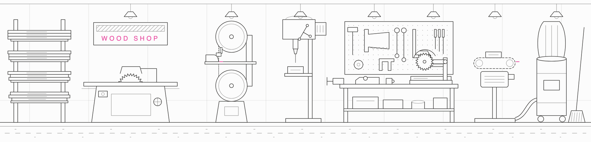

Table saw · Band saw · Drill press · Chop saw · Belt sander · and so, so much more
The WOOD SHOP entrance is marked PINK. Inside, tools have their own color-coding system. You'll figure it out.
Access to certain machines is facilitated by BTU "Mischief Makers". Anyone can become a "Mischief Maker" on any machine.
*WOOD SHOP access is separate from general BTU access and REQUIRES AN ORIENTATION.*
**FOR YOUR SAFETY, major equipment including table saw, band saw, belt sander, chop saw, and drill press are powered off between the hours of 10pm and 6am, daily.

Wood Shop Orientations
REGISTRATION IS REQUIRED! LINK ON THE CALENDAR.
The Wood Shop Orientation schedule can be found on the BTU Lab Calendar. Orientations are run by the BTU Mischief Maker(s) listed on the BTU Mischief Makers page.
Wood Shop Equipment
- Table Saw**
- Band Saw**
- Drill Press**
- Chop Saw**
- Belt Sander**
- Random Orbit Sander
- Palm Router
- Drills / Drivers
- Hand Saws
- Files
- Measuring Tools
- Other hand tools
- Oh, and so, so much more my friends!
BTU Wood Shop Policies
**FOR YOUR SAFETY, major equipment including table saw, band saw, belt sander, chop saw, and drill press are powered off between the hours of 10pm and 6am, daily. Tampering with timers is considered a serious safety violation.
Violation of any wood shop policy will result in loss of access to BTU Lab and the wood shop until both orientations are repeated.
- Use of the wood shop requires an orientation from BTU Lab staff.
- Following the orientation, you may use the wood shop under the following conditions:
- Observe all safety rules without exception.
- Do not work alone when no one could hear you if you needed assistance. Stay in earshot.
- Do not operate any tool that you are unfamiliar with. Get assistance.
- Do not alter any machine in a permanent way.
- Do not remove any tools from the wood shop or BTU Lab without staff approval.
- Do not attempt to repair a malfunctioning tool.
- Report malfunctioning tools. It is okay when a tool breaks under normal circumstances. A malfunctioning machine can be dangerous if a problem isn't understood. We just want to know what happened to prevent any possible harm.
- BTU Staff reserve the right to revoke wood shop access for any reason deemed necessary.
- Deadlines, fatigue, and other lack of preparation do not justify ignoring any wood shop policy.
- Multiple violations of wood shop policy, by one or more individuals, will result in reduced access for everyone including locking out machines or the entire space when staff are not available.
Materials: BTU LAB IS NOT A FREE SUPPLY STORE. But there are many ways to barter, including displaying your work in BTU, tagging us in social media, offering workshops, volunteering to organize supplies, and more. If you need something, we ask that you give something in return.